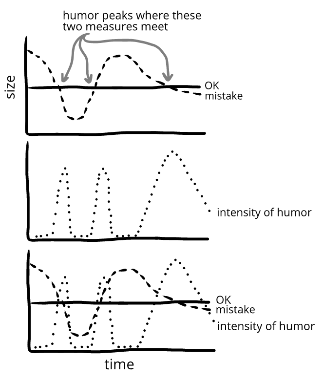

Humor is felt most intensely when the size of the mistake and OK are balanced. This lets us see humor grow in intensity, peak, and then decline in intensity:
In these graphs, someone feels humor whenever the lines for mistake and OK are close to each other. This lets us see at a glance when humor is felt, and how intensely.